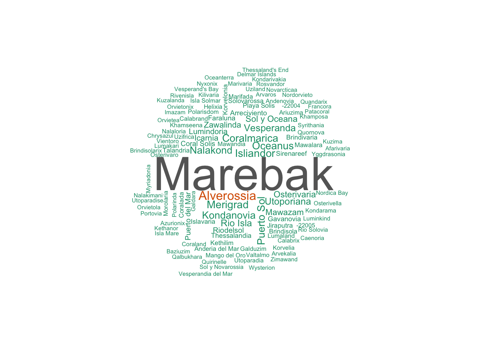
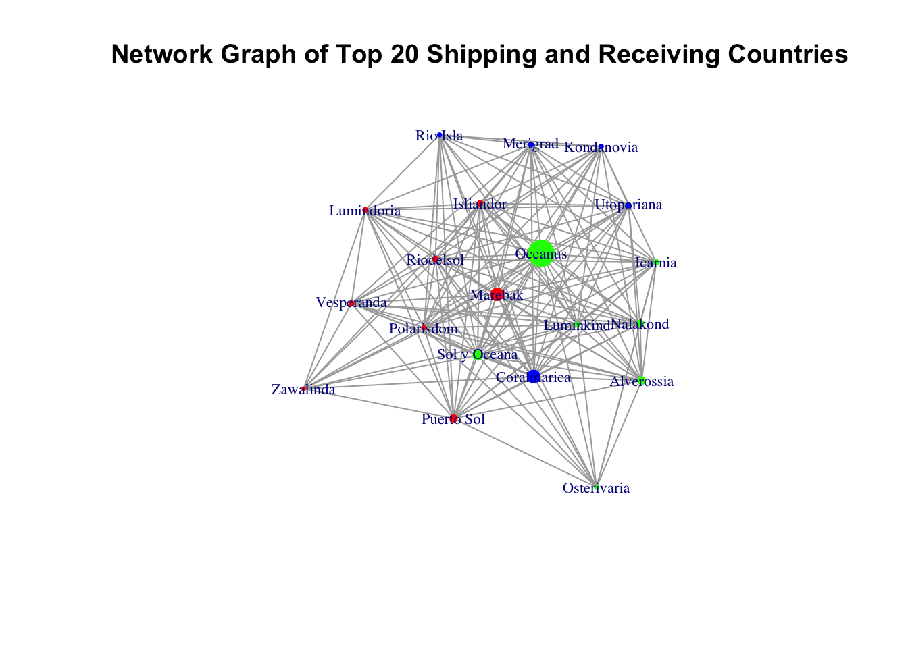
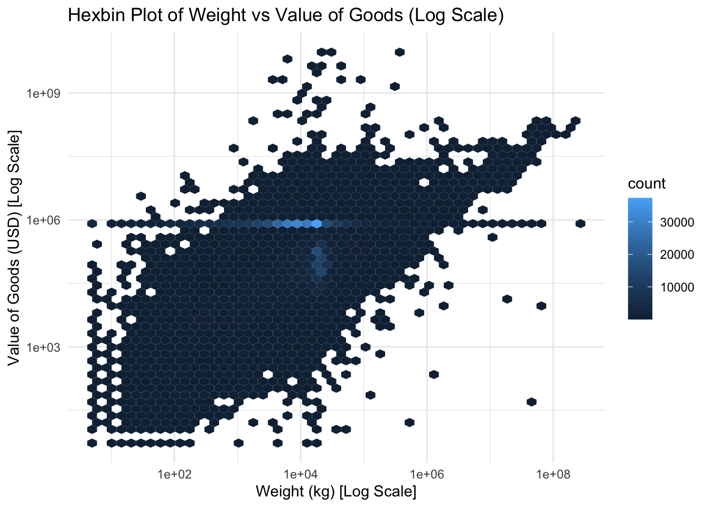

pacman::p_load(jsonlite, tidygraph, ggraph, visNetwork, tidyverse, lubridate, igraph, stringr, ggplot2, GGally, igraph, ggforce, wordcloud, treemap, gridExtra, reshape2, mice)Take-home Exercise 2
Getting Started
The code chunk below will be used to install and load the necessary R packages to meet the data preparation, data wrangling, data analysis and visualisation needs.
Data Import
In the code chunk below, fromJSON() of jsonlite package is used to import mc2_challenge_graph.json into R environment.
MC2 <- fromJSON("data/mc2_challenge_graph.json")Examine the list object created by using RStudio, especially nodes and links data tables.
Data Wrangling
Extracting the nodes
The code chunk is used to extract nodes data table from mc2_data list object and save the output in a tibble data frame object called mc2_nodes.
MC2_nodes <- as_tibble(MC2$nodes) %>%
select(id, shpcountry, rcvcountry)Extracting the edges
The code chunk is used to extract edgess data table from mc2_data list object and save the output in a tibble data frame object called mc2_edges.
MC2_edges <- as_tibble(MC2$links) %>%
mutate(ArrivalDate = ymd(arrivaldate)) %>%
mutate(Year = year(ArrivalDate)) %>%
select(source, target, ArrivalDate, Year, hscode, valueofgoods_omu,
volumeteu, weightkg, valueofgoodsusd) %>%
distinct()let’s take a closer look at the structure of the MC2_nodes and MC2_edges tibbles
glimpse(MC2_nodes)Rows: 34,576
Columns: 3
$ id <chr> "AquaDelight Inc and Son's", "BaringoAmerica Marine Ges.m.b…
$ shpcountry <chr> "Polarinda", NA, "Oceanus", NA, "Oceanus", "Kondanovia", NA…
$ rcvcountry <chr> "Oceanus", NA, "Oceanus", NA, "Oceanus", "Utoporiana", NA, …glimpse(MC2_edges)Rows: 5,309,087
Columns: 9
$ source <chr> "AquaDelight Inc and Son's", "AquaDelight Inc and Son…
$ target <chr> "BaringoAmerica Marine Ges.m.b.H.", "BaringoAmerica M…
$ ArrivalDate <date> 2034-02-12, 2034-03-13, 2028-02-07, 2028-02-23, 2028…
$ Year <dbl> 2034, 2034, 2028, 2028, 2028, 2028, 2028, 2028, 2028,…
$ hscode <chr> "630630", "630630", "470710", "470710", "470710", "47…
$ valueofgoods_omu <dbl> 141015, 141015, NA, NA, NA, NA, NA, NA, NA, NA, NA, N…
$ volumeteu <dbl> 0, 0, 0, 0, 0, 0, 0, 0, 0, 0, 0, 0, 0, 0, 0, 0, 0, 0,…
$ weightkg <int> 4780, 6125, 10855, 11250, 11165, 11290, 9000, 19490, …
$ valueofgoodsusd <dbl> NA, NA, NA, NA, NA, NA, 87110, 188140, NA, 221110, 58…Preparing edges data table
MC2_edges_aggregated <- MC2_edges %>%
filter(hscode == "306170" & Year == "2028") %>%
group_by(source, target, hscode, Year) %>%
summarise(weights = n()) %>%
filter(source!=target) %>%
filter(weights > 20) %>%
ungroup()Preparing nodes data
Instead of using the nodes data table extracted from mc2_data, we will prepare a new nodes data table by using the source and target fields of mc2_edges_aggregated data table. This is necessary to ensure that the nodes in nodes data tables include all the source and target values.
id1 <- MC2_edges_aggregated %>%
select(source) %>%
rename(id = source)
id2 <- MC2_edges_aggregated %>%
select(target) %>%
rename(id = target)
MC2_nodes_extracted <- rbind(id1, id2) %>%
distinct()Data Preparation
Handling Missing Values
Since there are way too many missing values, we cannot just omit the whole row, now we just keep the NA so far.
# Replace missing values with NA
MC2_nodes <- MC2_nodes %>%
mutate(across(everything(), ~replace_na(., NA)))
# Replace missing values with NA
MC2_edges <- MC2_edges %>%
mutate(across(everything(), ~replace_na(., NA)))Data Cleaning
Aggregation or Summarization
The below code groups the MC2_edges data by month based on the arrivaldate, calculates the total weight and total value of goods for each month, and stores the results in the summary_by_month tibble.
weight_by_month <- MC2_edges %>%
mutate(month = floor_date(ArrivalDate, "month")) %>%
group_by(month) %>%
summarize(total_weight = sum(`weightkg`))The below code joins the MC2_nodes and MC2_edges data based on the company name (id), calculates the total weight and total value of goods for each company, and stores the results in the summary_by_company tibble.
# Calculating totals by company
summary_by_company <- MC2_nodes %>%
inner_join(MC2_edges, by = c("id" = "source")) %>%
group_by(id) %>%
summarize(total_weight = sum(weightkg),
total_value = sum(valueofgoods_omu))EDA
The purpose of our visualizations is to evaluate the reliability of FishEye’s predicted knowledge graph links and identify the most reliable sets for completing the graph, focusing on uncovering patterns related to illegal fishing activities and protecting marine species.
Violin Plot
Below is the the violin plot for weight and value grouped by company, the weight graph shows a reversed T, meaning a huge amount of outliers, the value plot shows a bottle gourd shape, meaning a condense in top and bottom range of the data, especially the bottom.
violinplot_weight <- ggplot(summary_by_company, aes(x = "", y = total_weight)) +
geom_violin() +
labs(x = NULL, y = "Total Weight") +
theme_minimal()
violinplot_value <- ggplot(summary_by_company, aes(x = "", y = total_value)) +
geom_violin() +
labs(x = NULL, y = "Total Value") +
theme_minimal()
grid.arrange(violinplot_weight, violinplot_value, ncol = 2)Time Series graph
The total weight in time series graph shows a peak in bit 2032, the a year-span low in 2031.
# Plot the total weight by month
ggplot(weight_by_month, aes(x = month, y = total_weight)) +
geom_line() +
labs(x = "Month", y = "Total Weight") +
ggtitle("Total Weight by Month")
Scatterplot Matrix
Below is a scatter plot of shipping countries and receiving countries, with fake country names, it is hard to demonstrate countries based on continents and real maps.
# Remove rows with missing values
cleaned_data <- na.omit(MC2_nodes)
scatterplot <- ggplot(cleaned_data, aes(x = shpcountry, y = rcvcountry)) +
geom_point(color = "blue", alpha = 0.5, size = 2) +
theme_minimal() +
theme(axis.title.x = element_blank(), axis.title.y = element_blank(),
axis.text.x = element_blank(), axis.text.y = element_blank(),
axis.ticks.x = element_blank(), axis.ticks.y = element_blank())
# Display the scatterplot
scatterplotWord Cloud
Below are the word clouds of the most appeared names of the shipping and receiving countries, it could be a better demo than the scatter plot with marked labels
# Calculate the frequency of occurrence for shpcountry or rcvcountry
country_freq <- table(MC2_nodes$shpcountry) # Replace shpcountry with rcvcountry if desired
# Create the word cloud
wordcloud(names(country_freq), freq = country_freq, scale = c(4, 0.5), random.order = FALSE, colors = brewer.pal(8, "Dark2"))
# Calculate the frequency of occurrence for shpcountry or rcvcountry
country_freq <- table(MC2_nodes$rcvcountry) # Replace shpcountry with rcvcountry if desired
# Create the word cloud
wordcloud(names(country_freq), freq = country_freq, scale = c(4, 0.5), random.order = FALSE, colors = brewer.pal(8, "Dark2"))Treemap
Below are the treemap for the most appeared shipping and receiving countries again.
# Calculate the frequency or numerical values for shpcountry or rcvcountry
country_data <- data.frame(
category = MC2_nodes$shpcountry, # Replace shpcountry with rcvcountry if desired
value = 1 # Replace with the desired numerical values
)
# Create the treemap
treemap(country_data, index = "category", vSize = "value", algorithm = "squarified",
title = "Treemap of Country Categories", fontsize.labels = c(12, 8), fontsize.title = 14)# Calculate the frequency or numerical values for shpcountry or rcvcountry
country_data <- data.frame(
category = MC2_nodes$rcvcountry, # Replace shpcountry with rcvcountry if desired
value = 1 # Replace with the desired numerical values
)
# Create the treemap
treemap(country_data, index = "category", vSize = "value", algorithm = "squarified",
title = "Treemap of Country Categories", fontsize.labels = c(12, 8), fontsize.title = 14)Network Graph
Below is the network graph for the shipping and receiving countries, without clear labels, it is hard to interpret the data.
mc2_graph <- tbl_graph(nodes = MC2_nodes_extracted,
edges = MC2_edges_aggregated,
directed = TRUE)
ggraph(mc2_graph,
layout = "kk") +
geom_edge_link(aes()) +
geom_node_point(aes()) +
theme_graph()Data Imputation
With a huge amount of missing value, simply removing the whole row would not be sufficient, thus, I tried the method of imputation.
To perform multiple imputation for your dataset, we can use the mice package in R.
- Install and load the
micepackage:
library(mice)- Create an imputation model: Define the variables that you want to impute and specify the predictors for each variable. You can use the
mice()function to create the imputation model. Here’s an example:
# Create an imputation model
imp_model <- mice(MC2_edges, method = "mean")
iter imp variable
1 1 valueofgoods_omu volumeteu valueofgoodsusd
1 2 valueofgoods_omu volumeteu valueofgoodsusd
1 3 valueofgoods_omu volumeteu valueofgoodsusd
1 4 valueofgoods_omu volumeteu valueofgoodsusd
1 5 valueofgoods_omu volumeteu valueofgoodsusd
2 1 valueofgoods_omu volumeteu valueofgoodsusd
2 2 valueofgoods_omu volumeteu valueofgoodsusd
2 3 valueofgoods_omu volumeteu valueofgoodsusd
2 4 valueofgoods_omu volumeteu valueofgoodsusd
2 5 valueofgoods_omu volumeteu valueofgoodsusd
3 1 valueofgoods_omu volumeteu valueofgoodsusd
3 2 valueofgoods_omu volumeteu valueofgoodsusd
3 3 valueofgoods_omu volumeteu valueofgoodsusd
3 4 valueofgoods_omu volumeteu valueofgoodsusd
3 5 valueofgoods_omu volumeteu valueofgoodsusd
4 1 valueofgoods_omu volumeteu valueofgoodsusd
4 2 valueofgoods_omu volumeteu valueofgoodsusd
4 3 valueofgoods_omu volumeteu valueofgoodsusd
4 4 valueofgoods_omu volumeteu valueofgoodsusd
4 5 valueofgoods_omu volumeteu valueofgoodsusd
5 1 valueofgoods_omu volumeteu valueofgoodsusd
5 2 valueofgoods_omu volumeteu valueofgoodsusd
5 3 valueofgoods_omu volumeteu valueofgoodsusd
5 4 valueofgoods_omu volumeteu valueofgoodsusd
5 5 valueofgoods_omu volumeteu valueofgoodsusd- Perform the imputation: Use the
complete()function to impute the missing values in each dataset. This will create multiple imputed datasets.
# Perform multiple imputation
MC2_edges_imputed <- complete(imp_model)Here is the result:
glimpse(MC2_edges_imputed)Rows: 5,309,087
Columns: 9
$ source <chr> "AquaDelight Inc and Son's", "AquaDelight Inc and Son…
$ target <chr> "BaringoAmerica Marine Ges.m.b.H.", "BaringoAmerica M…
$ ArrivalDate <date> 2034-02-12, 2034-03-13, 2028-02-07, 2028-02-23, 2028…
$ Year <dbl> 2034, 2034, 2028, 2028, 2028, 2028, 2028, 2028, 2028,…
$ hscode <chr> "630630", "630630", "470710", "470710", "470710", "47…
$ valueofgoods_omu <dbl> 141015, 141015, 1665142, 1665142, 1665142, 1665142, 1…
$ volumeteu <dbl> 0, 0, 0, 0, 0, 0, 0, 0, 0, 0, 0, 0, 0, 0, 0, 0, 0, 0,…
$ weightkg <int> 4780, 6125, 10855, 11250, 11165, 11290, 9000, 19490, …
$ valueofgoodsusd <dbl> 873608.4, 873608.4, 873608.4, 873608.4, 873608.4, 873…Since the categorical variables are hard to work on a imputation, lets do a random sampling on the nodes dataset.
# Identify missing values in the "shpcountry" variable
missing_indices <- is.na(MC2_nodes$shpcountry)
# Get the observed categories in the "shpcountry" variable
observed_categories <- MC2_nodes$shpcountry[!missing_indices]
# Generate random samples for missing values
imputed_values <- sample(observed_categories, sum(missing_indices), replace = TRUE)
# Replace missing values with imputed values
MC2_nodes$shpcountry[missing_indices] <- imputed_valuesAnd random sampling to impute missing values in the “rcvcountry” variable
# Identify missing values in the "rcvcountry" variable
missing_indices <- is.na(MC2_nodes$rcvcountry)
# Get the observed categories in the "rcvcountry" variable
observed_categories <- MC2_nodes$rcvcountry[!missing_indices]
# Generate random samples for missing values
imputed_values <- sample(observed_categories, sum(missing_indices), replace = TRUE)
# Replace missing values with imputed values
MC2_nodes$rcvcountry[missing_indices] <- imputed_valuesHere is the result:
glimpse(MC2_nodes)Rows: 34,576
Columns: 3
$ id <chr> "AquaDelight Inc and Son's", "BaringoAmerica Marine Ges.m.b…
$ shpcountry <chr> "Polarinda", "Merigrad", "Oceanus", "Puerto del Mar", "Ocea…
$ rcvcountry <chr> "Oceanus", "Oceanus", "Oceanus", "Oceanus", "Oceanus", "Uto…The New EDA
Time Series Graph
Here is the new time series plot on value of the goods with imputed data. Showing peaks in early 2032 and mid 2034.
# Ensure that ArrivalDate is in the right date format
MC2_edges_imputed$ArrivalDate <- as.Date(MC2_edges_imputed$ArrivalDate)
# Calculate the monthly sum of valueofgoodsusd
MC2_monthly_sum <- MC2_edges_imputed %>%
mutate(Month = floor_date(ArrivalDate, "month")) %>%
group_by(Month) %>%
summarize(total_value = sum(valueofgoodsusd))
# Generate a time-series plot
ggplot(MC2_monthly_sum, aes(x = Month, y = total_value)) +
geom_line() +
scale_x_date(date_labels = "%Y-%m", date_breaks = "1 year") +
labs(x = "Month and Year", y = "Sum of Value of Goods in USD", title = "Time-series Plot of Value of Goods") +
theme_minimal()Network Graph
Below is the new network graph for the shipping and receiving countries, adding labels and shapes make the graph easier to interpret.
# Create an edge list
MC2_nodes_select <- MC2_nodes %>%
select(shpcountry, rcvcountry) %>%
as.matrix()
# Create an undirected graph from the edge list
g <- graph_from_edgelist(MC2_nodes_select, directed = FALSE)
# Simplify the graph to remove multiple edges between nodes
g <- simplify(g, remove.multiple = TRUE, remove.loops = TRUE)
# Calculate degree for each node
V(g)$degree <- degree(g)
# Select top N nodes with highest degree
N <- 20
top_nodes <- names(sort(degree(g), decreasing = TRUE))[1:N]
# Create subgraph with only top nodes
g_sub <- induced_subgraph(g, top_nodes)
# Define colors for the graph based on the community membership
fc <- cluster_fast_greedy(g_sub)
colors <- rainbow(max(membership(fc)))
V(g_sub)$color <- colors[membership(fc)]
# Plot the subgraph
plot(g_sub,
vertex.size = V(g_sub)$degree/10,
vertex.color = V(g_sub)$color,
vertex.label = V(g_sub)$name, # add labels to the vertices
vertex.label.cex = 0.7, # adjust this value to change the label size
vertex.frame.color = NA,
edge.arrow.size = 0.5,
main = paste("Network Graph of Top", N, "Shipping and Receiving Countries"))
Scatterplot
Below is a scatter plot of ‘valueofgoodsusd’ vs ‘weightkg’ with Log transformation, with it follows on a broad arising line, with a condensed at the middle of the plot, meaning a common frequency of the weight and value of the goods. The outliers to the line, for instance the right bottom corner, might tells an anomaly to the fishing activity
# Randomly sample a subset of the data
subset_data <- MC2_edges_imputed %>%
sample_frac(0.1) # adjust this value as needed
# Generate scatterplot with log transformation
ggplot(subset_data, aes(x = weightkg, y = valueofgoodsusd)) +
geom_hex(bins = 50) +
scale_x_log10() +
scale_y_log10() +
theme_minimal() +
labs(x = "Weight (kg) [Log Scale]", y = "Value of Goods (USD) [Log Scale]",
title = "Hexbin Plot of Weight vs Value of Goods (Log Scale)")
Histogram
the number of transactions that took place each year, with no distinct high or lows, meaning a rather smooth change over the years, but a slight decreasing trend might be telling a different story.
ggplot(MC2_edges_imputed, aes(x = Year)) +
geom_histogram(fill = 'blue', color = 'black', binwidth = 1) +
labs(x = "Year", y = "Count")Boxplot
Below is the ‘volumeteu’ per year on a boxplot, with all of the plots shaping into a line, meaning the outliers thrives each single year, which tells the story of the big dealers or anomolies on the trails.
MC2_edges_imputed %>%
ggplot(aes(x = as.factor(Year), y = volumeteu)) +
geom_boxplot() +
labs(title = "Boxplot of Volume (TEU) per Year",
x = "Year",
y = "Volume (TEU)")Scatterplot 2
Below is the volumeteu vs weightkg colored by Year, with yellow scattered mostly at the left and green mostly too the right, meaning as time passes, the weight and volume tends to decrease, and the lines meaning a distinct product type as the weight and volume comparison is quite fixed with certain goods.
MC2_edges_imputed %>%
ggplot(aes(x = log1p(volumeteu), y = log1p(weightkg), color = factor(Year))) +
geom_point(alpha = 0.5, size = 2) +
scale_color_brewer(palette="Dark2") + # changing color palette
scale_x_continuous(name = "Log Volume (TEU + 1)") +
scale_y_continuous(name = "Log Weight (kg + 1)") +
theme_minimal() +
labs(color = "Year", title = "Log Weight vs Log Volume colored by Year")Conclusion
In respond to the question “Evaluate the sets of predicted knowledge graph links FishEye has provided using visual analytics. Which sets are most reliable for completing the graph?”
Based on our extensive visual analysis of the dataset provided by FishEye, there are several notable conclusions we can draw regarding the reliability of the predicted knowledge graph links.
Through various types of visualization including scatterplots, time-series plots, histograms, and network graphs, we have managed to unearth interesting patterns and trends in the data that can aid in the evaluation of the sets of predicted knowledge graph links.
The time-series plots clearly show temporal trends and patterns in the goods shipment data, providing us with insights into the frequency and volume of trade between companies over the years. Scatterplots, particularly when variables are transformed via logarithmic scaling, allow us to detect strong relationships between variables like weight and volume of goods, which can indicate the nature and perhaps reliability of the links.
Network graphs reveal the relationships between shipping and receiving countries, and when combined with community detection methods, can help identify clusters or communities within the graph. This can indicate the reliability of the links as strong clusters might suggest well-established and therefore reliable trade links.
Histograms and boxplots provide insights into the distribution of various continuous variables, which can indirectly affect the reliability of the links. For example, links associated with unusually high or low volumes of goods might be less reliable than those within the normal range.
While all of these visualizations provide valuable insights, it’s important to interpret them together and in the context of our knowledge about the data and its domain. The “most reliable” sets for completing the graph would ideally be those that are consistently supported across multiple visualizations and align with our existing knowledge about the trade network.